A complete website redesign for a Campbell River construction company — rebuilding the outdated Wix website from scratch — expanded services, stronger brand presence, cleaner navigation, and improved UX throughout, all within the same Wix platform.
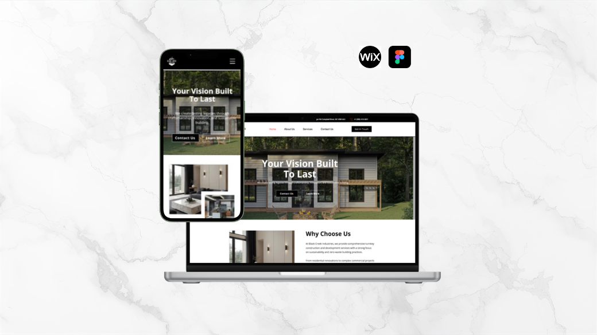
🏗️assets/bci-redesign/cover.pngBlack Creek Industries Ltd is a construction and development company based in Campbell River, BC. They offer comprehensive turnkey services across five categories — marine infrastructure, civil works, residential renovations, commercial spaces, and snow removal — serving clients across Vancouver Island and beyond.
I work with the company as a Software Programmer at Black Creek Industries Ltd, and was brought in to redesign their existing Wix website, which had grown outdated as the business expanded its service offering and brand positioning. The old site no longer reflected the scale, quality, or full scope of what the company does.
The redesign rebuilt the site entirely from scratch within Wix — introducing a cleaner, more professional visual identity, restructuring the navigation to reflect all five service areas, and adding new sections including a 4-step process, BC Housing licensing credentials, Pacific Home Warranty approval, and a stronger homepage journey from introduction through to contact.
The original website was built on Wix and had served the company in its earlier days. But as Black Creek Industries grew — adding marine and civil services, gaining BC Housing licensing, and taking on larger commercial projects — the old site could no longer keep up. It presented the company as a smaller residential contractor rather than the full-service construction firm it had become.
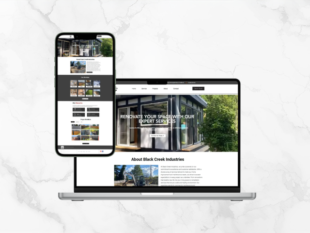
🕰️Old homepage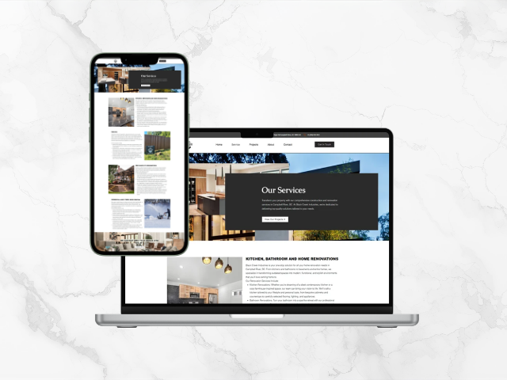
🕰️Old services & projects pageThe redesigned site moves the company's digital presence into line with its actual scale and capability. A strong, confident hero section leads with "Your Vision Built To Last" — a positioning statement that speaks to both homeowners and commercial clients. The navigation was restructured around five distinct service categories, each with its own dedicated page.
The transformation is most visible when the two homepages are placed side by side — from a generic service listing to a confident, brand-led experience.
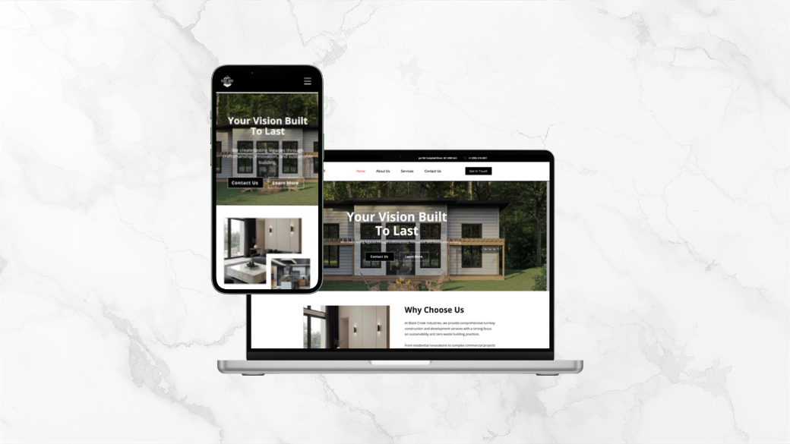
✨New siteThe old navigation grouped everything under a generic "Services" page. The new structure gives each service category its own dedicated page — making it easier for the right client to find exactly what they need, and helping SEO by giving search engines distinct, focused pages for each service type.
The new homepage was structured as a deliberate narrative — each section answers the next question a prospective client would naturally have after reading the previous one.
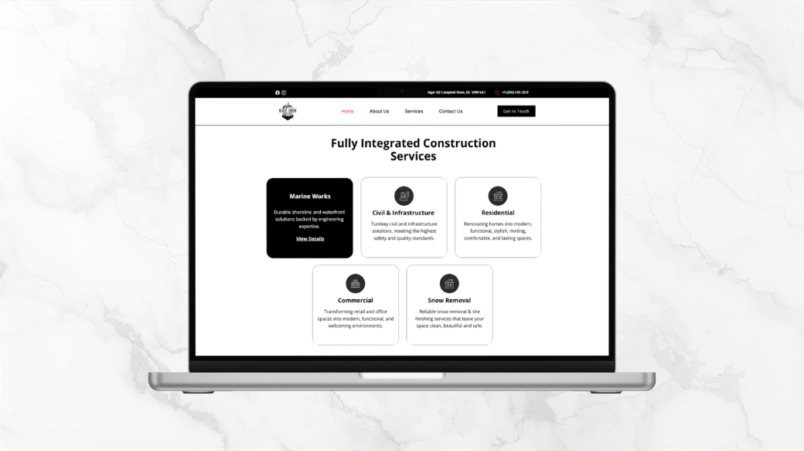
🖼️Services grid section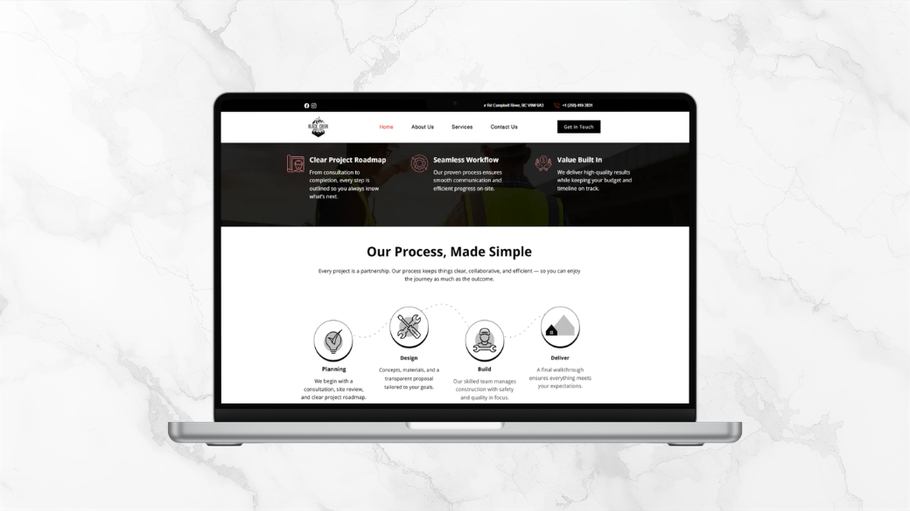
🖼️Process sectionWhere the old site lumped everything onto a single services page, the redesign gives each service category its own fully designed page — targeted copy, relevant imagery, and a consistent CTA structure that directs visitors toward getting in touch.
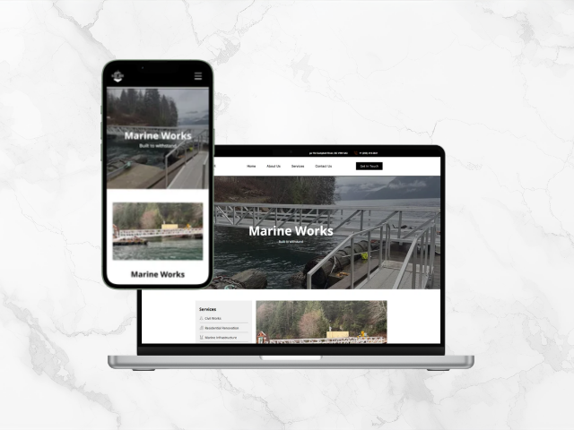
⚓Marine Infrastructure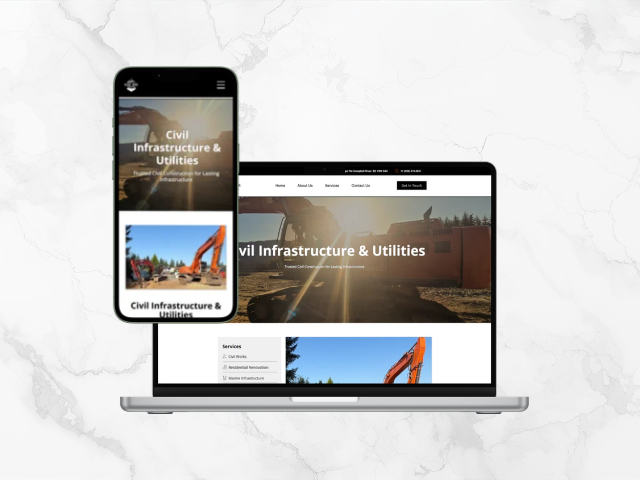
🚧Civil Works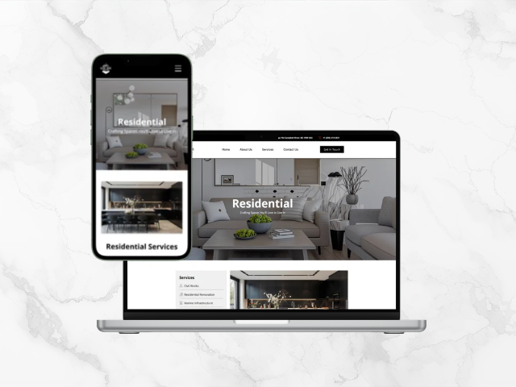
🔨Residential Renovations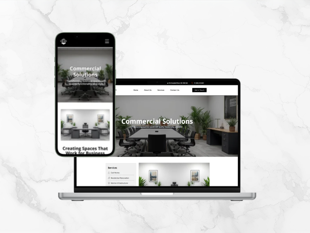
🏢Commercial Spaces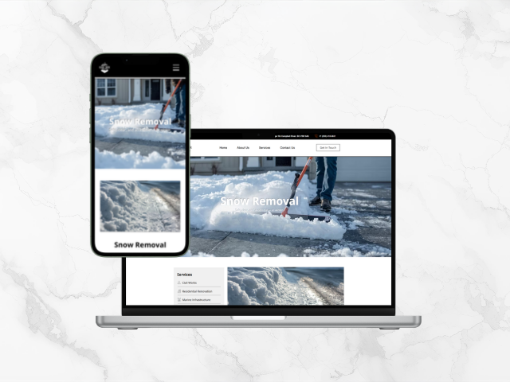
❄️Snow Removal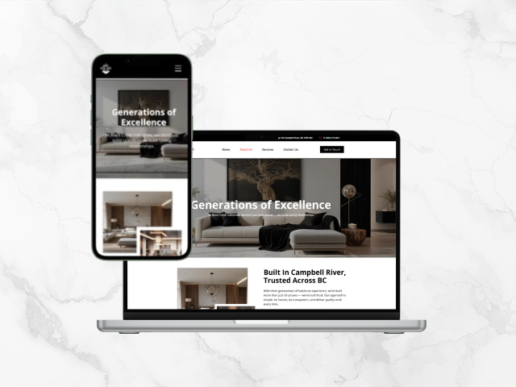
👥About UsConstruction clients browse on mobile as often as desktop — on site, checking project details, or doing quick research. All pages were built with responsive breakpoints in Elementor and tested across desktop, tablet, and mobile to ensure the navigation, service cards, imagery, and CTAs work correctly at every size.
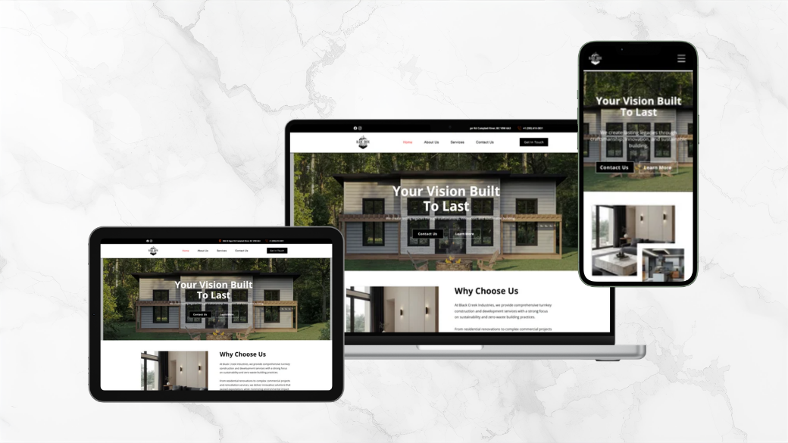
The redesign was done entirely within Wix — rebuilding the site from scratch with a fresh visual design, new content structure, and updated service pages while keeping the client on the platform they already knew.